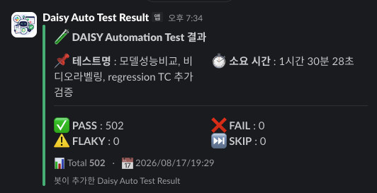

まず制約を定義した — アーキテクチャのすべての判断はここから
テストを書く前に、このプロダクトが自動化に対して何を許さないかから整理しました。
| 制約 | そのため何が難しくなるか | 設計での答え |
|---|---|---|
| 成果物の所属 すべてのノードは自分のプロジェクト内でのみ有効 |
固定プロジェクトを使い回すと、実行のたびにノードが溜まり、いずれ壊れる | テストごとに専用プロジェクトを作成 → 終了時に削除を共通ヘルパーで強制 |
| 実サーバーが対象 モックなしの実環境3つ |
失敗を意図的につくれず、サーバーの状態が結果に影響する | サーバーの挙動を実験で突き止めて前提にし、障害はリクエストの遮断・注入で再現 |
| 単一の共有アカウント + SSO | 同時ログインが前のセッションを切るため、並列実行が成り立たない | セッションの単位がアカウントではなく端末（User-Agent）であることを突き止め → workerごとにUAを分離 |
| 高コストな処理 モデル学習に30分〜3時間 |
利用するテストのたびに再学習すると、スイートを運用できない | 学習結果をフィクスチャに記録して再利用 — タイプごとに1回に固定 |
| 非同期の長時間処理 完了の合図が一時的なUI |
トーストを基準にすると、高負荷時に誤ったPASSが出る | ノードの状態・ダウンロードファイル・リクエストペイロードを判定の根拠に |
並列実行 — 単一アカウントの実サーバーで成り立たせる
🔑 workerごとにUser-Agentを分離
SSOが「同じUAでの同時ログイン = 同じ端末での再ログイン」とみなして前のセッションを切ることを 実験で突き止め、workerごとにUAトークンを付与して3 workerの同時ログインを実現。
⚡ ファイル内での並列化
直列だった前処理スイートを3グループに分割し、各グループが専用プロジェクトを持ってworkerに分散。
19.3分 → 11.8分（-39%）
🧮 サーバーとの整合
サーバーの同時処理の上限（3）にworker数と待機ポリシーを合わせ、 完了待ちの上限を「最長の学習残り時間 + 余裕」で算出して、キュー待ちによる誤検知をなくしました。
トラブルシューティング — 証拠で原因を確定した5件
CASE 1 — ログインできたのに、ログイン画面に戻される
ログイン直後にgotoで割り込むとSSOのリダイレクトチェーンが切れて未認証になることを、
段階ごとのURL診断で確定。画面遷移を禁止して自動到達だけを待つよう変更し、
新旧のログイン方式を自動で分岐して3つの環境で1つのヘルパーを共有。
CASE 2 —「手動ではできるのに、なぜ自動化だけ失敗するのか？」
「アカウントごとに1セッション」というもっともらしい仮説で止まらず、矛盾を実験で掘り下げ、 セッションがアカウントではなく端末単位であることを突き止めました。cloudでの並列を1 → 3 workerに復旧。
CASE 3 — 6分かかる学習が26秒で「完了」
合格したテストケースが犯人だったケース。レポートのタイムライン再構成 + DOMスナップショットで、 高負荷時に準備区間が長引き、完了判定を誤っていたことを確認。進捗トーストを判定に加えて全区間を保護。
CASE 4 — キャンバスが真っ白になるグリッチ
trace DOMスナップショットの追跡で、React Flowにインラインのvisibility:hiddenが残り続けることを確認し、
トリガー（モーダルを閉じた直後のソケット通知）まで特定。単独の再現スクリプトをつくってプロダクトの不具合として報告。
CASE 5 — 40秒足りずに失敗した検証
「再現しないflaky」を、全テストの開始・終了時刻からサーバーのスロット占有を再構成して解明 — コードの不具合ではなく構造的な待ちでした。flakyを「運」ではなく、原因のある欠陥として扱いました。
🔍 共通のアプローチ
- trace DOMスナップショットを時点ごとに追跡
- レポートのタイムラインを再構成
- リクエストペイロードをインターセプト
- 単独の再現スクリプトを作成
- 仮説と矛盾する事実を最後まで掘り下げる
判定の根拠をレポートに残す


レポーティングと成果 — 結果がチームに届いて自動化は完成する


- 軽量な添付設計 — video・traceを除いたzipだけを添付（数GB → 1〜2MB）、 ローカルには全アーティファクトを実行ごとのフォルダに保存
- 対話型の実行ツール — コマンド1行でテスト名・Slack送信の有無を尋ねて実行。 CIでは質問なしで自動実行し、部分実行でチームのチャンネルが埋もれないよう送信はopt-in
- セキュリティ — traceに平文で記録される認証情報に気づき、 アカウントポリシー・gitignore・添付からの除外で漏えい経路を遮断
成果
| 項目 | Before | After |
|---|---|---|
| リリース回帰テスト | 手作業 · 1日以上 | コマンド1行 · 無人実行 + Slackへ自動報告 |
| cloudでの並列実行 | SSO刷新後は1 worker | 3 workerに復旧 |
| 前処理スイート | 直列で19.3分 | グループ並列で11.8分（-39%） |
| モデル学習のコスト | 利用するテストのたびに再学習 | タイプごとに1回 · フィクスチャを再利用 |
| スイートの拡張 | 追加するたびに構造の修正が必要 | 規模を2倍以上に拡張 · アーキテクチャ変更なし |
| 検証の問い | 機能が動くか | + 結果の品質が保たれているか · 直したものが保たれているか |